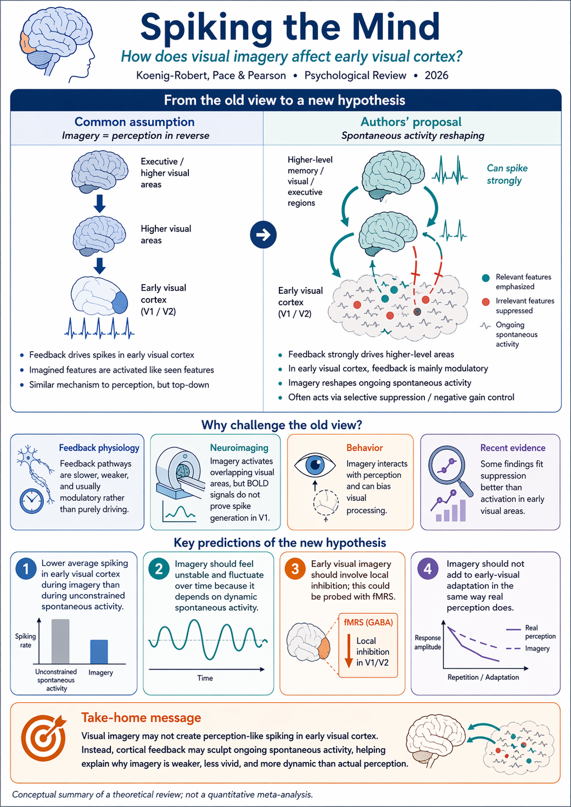

Paper Summary
Spiking the Mind: Rethinking the Role of Cortical Feedback in Visual Mental Imagery
Summary
The paper challenges the default assumption that visual mental imagery is simply perception replayed at lower gain through spike-driving top-down feedback into early visual cortex. The authors argue that this assumption is anatomically and physiologically strained in V1/V2, where long-range feedback projections are comparatively sparse, mostly modulatory, and typically slower than feedforward drive.
To address this, they propose the Spontaneous-Activity Reshaping Hypothesis. On this view, imagery does not need to recreate full percept-like spike patterns in early visual cortex. Instead, it biases and reshapes ongoing spontaneous activity: populations tuned to imagined features are selectively boosted, while competing or irrelevant populations are dampened. Imagery then changes the internal state of the visual system without requiring strong de novo spike generation in early areas.
This framework explains several common differences between imagery and perception: imagery tends to have lower spatial fidelity, lower contrast-like strength, and slower onset/buildup. It also naturally predicts that imagery should more often produce priming than strong adaptation, because modulation of spontaneous activity is weaker and shorter-lived than direct sensory drive.
The paper does not claim a single mechanism for all levels of the hierarchy. A key nuance is that higher visual areas with denser recurrent circuitry may still support stronger spiking feedback, while early visual areas may be dominated by modulatory reshaping. The result is a layered account in which spiking and modulatory mechanisms can coexist across levels and timescales.
Why This Matters
The article reframes imagery from a “faint internal picture” metaphor to a circuit-level population-bias process. That shift helps unify anatomy, timing constraints, and psychophysical observations in a single framework, while avoiding overcommitment to a one-size-fits-all mechanism. It also provides directly testable predictions for experiments that combine imagery tasks with neural recordings in early visual cortex.
Caveats and Limitations
- The argument is strongest for early visual cortex; it may not generalize uniformly to all higher visual or associative regions.
- Much of the support is inferential and synthesis-based, with limited direct recordings of spontaneous-activity reshaping during active imagery.
- Task demands (e.g., vivid sensory imagery vs. abstract imagery) likely change the balance between modulatory and spiking mechanisms, but this remains under-specified.
- A hybrid hierarchical model is plausible, but precise boundary conditions between mechanisms still need causal testing.
Key Takeaways
- Mental imagery may often operate by reshaping spontaneous activity rather than recreating perception-like spiking in V1.
- Cortico-cortical feedback in early visual cortex is better characterized as modulatory/gain-setting than primary spike-driving input.
- The model explains why imagery is usually weaker, coarser, and slower than direct perception.
- Imagery-related aftereffects are expected to skew toward priming over adaptation.
- The proposal is deliberately testable and motivates direct neural measurements during imagery tasks.
